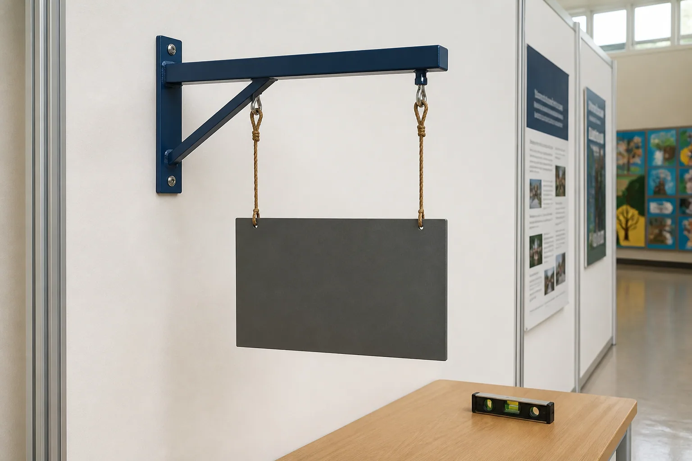

Module 5 PowerPoint
Editable classroom presentation covering all three named learning sections.
Section 1
Surface preparation and coatings
Explain why surface condition and coating-system compatibility affect appearance and service performance without providing a local painting or sanding procedure.
A finish is a system, not just a colour
A product's surface system includes the base material, its current surface condition, any preparation, the approved primer or intermediate layer, the topcoat and the environment in which the product will be used. These parts interact. A colour may support appearance and communication, but a finish may also help protect the surface, make cleaning easier or reveal quality more clearly.
The Drive guide names primer, paint and abrasive preparation materials as possible finishing resources for its metal-sign pathway. That list does not confirm a product, method or sequence for every project. Coating systems are material- and product-specific. The teacher must select compatible products and give the local directions. Students learn to explain the purpose of each layer and to record the approved system accurately.
Preparation creates the required starting condition
Surface preparation aims to bring the substrate — the material being coated — to the condition required by the approved coating system. Unwanted dust, oil, moisture, loose material, corrosion or unevenness can affect how a coating spreads, bonds or appears. Adhesion is the ability of one material to remain attached to another. Good adhesion depends on compatibility as well as surface condition.
Preparation is not a generic instruction to sand or clean everything. Different materials and coatings require different approved treatments, and some products or residues need particular controls. Students should inspect and describe the starting surface, then follow the teacher's demonstration and product information. A useful record states the observed condition, the approved preparation purpose and the evidence used to confirm readiness; it does not copy an online method into the workshop.
Coating layers have different jobs
A primer is a preparatory coating designed to support the approved coating system; a topcoat provides the intended outer appearance and service surface. Not every product uses the same combination, and names on containers do not prove compatibility. The base material, intended environment and manufacturer's current information all matter. The teacher confirms the system and whether any intermediate stage is required.
A coating also needs time to form its intended film or surface. Dry-to-touch, ready for another approved stage and fully cured are not necessarily the same state. Exact times depend on the product and conditions, so students must use teacher guidance and the current label rather than a remembered rule. Handling or testing too early can affect the surface and weaken the evidence about final quality.
Finish quality is judged against purpose
Finish quality can be evaluated through agreed criteria such as even appearance, coverage of intended areas, legibility, absence of unwanted marks and suitability for the expected environment. The exact standard must be confirmed locally. Record the approved product system and enough evidence to compare the result with the criterion, while avoiding private labels, names or sensitive workshop details in photographs.
Sustainability thinking includes more than choosing a colour or claiming that a coating is ‘eco-friendly’. Consider whether the finish may extend useful life, what amount is required, how avoidable rework can be reduced and how products or containers are managed under the school's system. A long-lasting compatible finish can reduce future maintenance, but that claim needs evidence about the intended context. Make a balanced judgement rather than assuming that more coating is always better.
Key vocabulary
- substrate
- The base material or surface that receives a coating.
- adhesion
- The ability of one material to remain attached to another.
- primer
- A preparatory coating used as part of an approved coating system.
- topcoat
- The outer coating layer that provides the intended appearance and service surface.
- cure
- The process by which a coating develops its intended final film or properties.
- compatibility
- The ability of materials or products to work together as intended.
Painting is mainly choosing a colour, and any primer or paint will work on any metal.
A finish is a compatible system involving substrate condition, approved preparation, suitable layers, environment and curing. Product selection is teacher-controlled.
Takeaway: Treat finishing as a compatible surface system: understand each layer's purpose, prepare only through the approved method and judge the result against confirmed appearance and service criteria.
Local workshop boundary: Use only the surface preparation, coating product, PPE, work area, timing and application method approved and demonstrated by your teacher. Follow the current product label and school controls.
Video or no-stream pathway
No-stream learning pathway
Coating-system concept cards
Covers the roles, compatibility and evaluation of a coating system without giving an application demonstration.
- Match substrate, preparation purpose, primer, topcoat and intended environment cards by function.
- Identify which connections require evidence of compatibility rather than assumption.
- Read two finish-quality observations and decide which one uses an agreed criterion.
Evidence prompt: Record the decision or explanation named in the final step.
Streaming is optional. The pathway above covers the section learning on its own. Open this record in the media library.
Check your understanding: surface preparation and coatings · 10 questions + one response
Formative learning evidence
Answer all ten questions, use the feedback to revisit exact help, then complete the scaffolded response. Work saves only in this browser.
Higher-order response
Explain how a compatible surface system could support the appearance and service needs of one project pathway. Evaluate the evidence that would be needed before and after coating, without proposing an unapproved application procedure.
Use these prompts
- What appearance and service criteria should the finished surface meet in the confirmed context?
- How do substrate condition, preparation purpose and compatible coating layers contribute to those criteria?
- What evidence would show readiness and final quality, and which product or timing facts remain teacher-controlled?
Success criteria
- Explains the connected roles of substrate condition, preparation, coating layers and environment.
- Uses criteria-based evidence and clearly avoids inventing products, times, PPE or application methods.
Nothing saved yet.
Section 2
Hanging, stability and use
Introduce load paths, balance, stability and context-of-use reasoning so students can discuss safe product systems without inventing installation or load specifications.
A product and its support form one system
A hanging product does not work alone. The product, connection points, connectors, support and surrounding environment form a system. A load path describes how forces travel through those connected parts to the support. If one link is unsuitable, the whole system may fail to meet its intended use even when the product itself looks well made.
The Drive worksheet offers broad mounting categories such as hooks, chain, holes and bolts or another solution. Those are prompts for thinking, not approved installation options. The supplied Swinging Sign photograph shows an example appearance but cannot prove connection details, materials, load limits, wind suitability or installation method. A design review must consider the complete approved system rather than copying a visible feature.
Balance depends on forces and geometry
When an object is suspended, gravity acts through its centre of mass. The exact location depends on how mass is distributed. Connection points and support geometry affect the position the object takes at rest and how easily it rotates or tilts. A symmetrical outline does not guarantee balanced mass, especially when openings, attachments or different materials are present.
Stability means the product resists unwanted movement or tipping in its intended use. For a suspended sign, the relevant movement might include tilt or swing; for a freestanding holder, it could include tipping or distortion under an approved load. These ideas can be explored safely with teacher-provided paper or cardboard models. Actual project testing, acceptable movement and load values must be defined and supervised by the teacher.
Use context changes the criteria
Context includes location, user, nearby people, weather exposure, contact, visibility, maintenance and the expected service period. An indoor decorative sign and an outdoor sign may face different environments. A wall-mounted object and a freestanding object place forces into supports differently. The design criteria must match the confirmed context rather than a general idea of ‘strong enough’.
Usability asks whether the product performs its intended purpose for the user. For a sign, legibility, orientation and clearance may matter alongside mounting. For an LED tea-light holder, the approved LED device, access and stability matter; real flames are outside this course boundary. For a pot-plant holder, the intended pot, total approved load, centre of mass and support surface must be confirmed before any use test.
Testing needs a criterion, method and authority
A test is meaningful when it has a confirmed criterion, an approved method, a controlled context and a decision rule. ‘See if it works’ is too vague. A test plan should state what is being checked, what evidence will be recorded, who authorises and conducts the test and what will happen if the result is outside the approved range. This does not mean students design their own load or installation tests.
Safe evidence may include a teacher-observed result, an approved checklist, a photograph of the product in a controlled test setup or a record of orientation before and after the test. Keep the evidence proportional and privacy-aware. If a condition changes, a connection loosens or movement differs from expectations, the test stops and the teacher decides the next action. No successful classroom test automatically authorises public installation.
Key vocabulary
- system
- Connected parts that work together for a purpose.
- load path
- The route through which forces travel across connected parts to a support.
- centre of mass
- The point through which the overall effect of gravity can be considered to act.
- stability
- Resistance to unwanted movement, tipping or change in the intended context.
- usability
- How effectively and appropriately a product supports its intended user and purpose.
- test criterion
- The confirmed expectation against which a test result is judged.
If a hanging product looks balanced and holds once, it is safe for any location or load.
Appearance and one event cannot establish system capacity or context suitability. Support, load, movement, environment and testing all require teacher-approved criteria.
Takeaway: Treat product, connections and support as one system; reason about balance and context, then use only teacher-approved testing and installation decisions.
Local workshop boundary: Do not hang, load, install, suspend or use any project until your teacher has confirmed the approved support, load, location and test. The tea-light pathway is LED-only; pot-holder loading and stability remain teacher-confirmed.

Video or no-stream pathway
No-stream learning pathway
Balance-and-system thought experiment
Covers system, load-path, balance and approval concepts without a real product load or installation demonstration.
- Trace the conceptual load path from a paper model through its connection points to the demonstration support.
- Compare balanced and tilted states and explain how mass distribution or connection geometry changed the result.
- Identify which facts would need teacher confirmation before the idea could be applied to the actual project pathway.
Evidence prompt: Record the decision or explanation named in the final step.
Streaming is optional. The pathway above covers the section learning on its own. Open this record in the media library.
Check your understanding: hanging, stability and use · 10 questions + one response
Formative learning evidence
Answer all ten questions, use the feedback to revisit exact help, then complete the scaffolded response. Work saves only in this browser.
Higher-order response
Apply systems thinking to one project pathway. Explain how product, connections, support, context and testing must work together, then identify the evidence and approvals needed before use.
Use these prompts
- What are the main parts of the system, and how would forces conceptually travel to the support?
- How could mass distribution, connection geometry or context affect orientation, movement or stability?
- What criterion, controlled test evidence and teacher approval would be required before use?
Success criteria
- Explains the complete product-support system and connects at least two design factors to stability or usability.
- States pathway-specific boundaries accurately, including LED-only tea-light use or teacher-confirmed pot loading where relevant.
Nothing saved yet.
Section 3
Evaluate, feedback and improve
Teach students to make a defensible final judgement from criteria and evidence, use feedback thoughtfully and propose specific future improvements.
Evaluation is a judgement supported by evidence
An evaluation explains how well a design solution meets its criteria and purpose. It combines judgement with evidence. A description says what the product looks like; an evaluation explains why that result matters. For example, ‘The letters are visible’ is a description. ‘The letters remain easy to distinguish in the approved viewing check, so the sign meets the legibility criterion’ is an evaluation.
A balanced evaluation considers strengths, limitations and the significance of each. It should draw from design records, approved measurements, quality inspections, test results, process evidence and user or peer feedback. Not every piece of evidence has equal weight. A teacher-observed controlled test may answer a performance question more strongly than an opinion. If evidence is missing, state the limitation rather than turning an assumption into a conclusion.
Distinguish defects, variation and design decisions
A defect is a condition that fails a required criterion. Variation is a difference that may or may not affect the criteria. A design decision is an intentional choice made for a reason. The same visible feature could fall into different categories depending on the approved brief. A changed curve might be a defect if it harms legibility, an acceptable variation if it stays within the standard, or a design decision if it was reviewed and approved.
Use evidence before applying a label. Identify the relevant criterion, describe the feature neutrally and explain its effect on function, appearance, usability or safety. Avoid treating every imperfection as failure. Equally, do not rename a defect as ‘character’ to avoid a difficult conclusion. Accurate classification helps choose the right next action: accept, improve, revise the criterion through proper review or learn from it for a future project.
Useful feedback is specific, relevant and actionable
Feedback is information intended to improve understanding or a result. Strong feedback refers to a criterion, identifies evidence and suggests a direction rather than taking control of the design. ‘The lower text is harder to distinguish in the viewing example; compare spacing and contrast with your legibility criterion’ is more useful than ‘I don't like it’. It tells the designer what to investigate while leaving the decision with them.
Designers also evaluate feedback. Ask whether the person understood the intended user and context, whether the comment links to a criterion and whether other evidence supports it. Several people repeating a preference does not automatically turn it into a requirement. Record feedback fairly, respond to the relevant point and explain whether it led to acceptance, modification or a future recommendation.
An improvement proposal is specific and testable
A useful improvement names the issue, proposes a change, predicts a benefit and identifies what would be checked. ‘Next time I would do better’ does not guide action. ‘Next time I would test two text arrangements earlier against the approved viewing criterion, which should reveal legibility problems before file approval’ is specific, linked to evidence and testable.
Improvements can address the product, the process or the evidence system. A product change may improve a feature; a process change may reduce rework; an evidence change may capture a decision more clearly. Prioritise one or two changes with the greatest likely effect rather than producing a long wish list. End by naming a transferable lesson — something that could inform another project pathway without copying its dimensions, materials or procedures.
Key vocabulary
- evaluation
- A reasoned judgement of how well a solution meets criteria and purpose.
- defect
- A condition that fails a required criterion.
- variation
- A difference that must be judged for its effect on criteria.
- actionable feedback
- Specific information that identifies a useful direction for improvement.
- iteration
- A cycle of developing, checking and improving a design or process.
- transferable lesson
- Learning that can guide a new context without copying unverified project facts.
Evaluation means listing everything that went wrong or saying whether you liked the finished product.
Evaluation is a balanced, evidence-based judgement against criteria, including strengths, limitations, feedback and specific future improvements.
Takeaway: Use criteria and the strongest available evidence to judge the result, classify differences accurately, evaluate feedback and propose a small number of testable improvements.
Local workshop boundary: This learning-package response is formative learning evidence, not proof of formal submission or teacher observation. Your teacher will confirm any school assessment task, rubric, weighting, due date and evidence requirement.
Video or no-stream pathway
No-stream learning pathway
Evidence-to-evaluation worked example
Covers the same evaluation reasoning, feedback quality and improvement structure without requiring video.
- Sort statements into description, evidence, judgement and improvement.
- Compare vague and criteria-linked peer feedback, then explain which is more actionable.
- Build one model evaluation paragraph from a criterion, evidence, balanced judgement and testable next step.
Evidence prompt: Record the decision or explanation named in the final step.
Streaming is optional. The pathway above covers the section learning on its own. Open this record in the media library.
Check your understanding: evaluate, feedback and improve · 10 questions + one response
Formative learning evidence
Answer all ten questions, use the feedback to revisit exact help, then complete the scaffolded response. Work saves only in this browser.
Higher-order response
Evaluate your project or a teacher-provided fictional case against confirmed criteria. Make a balanced judgement, use feedback carefully and justify one high-priority improvement for a future iteration.
Use these prompts
- Which criteria were met, partly met or not yet evidenced, and what specific evidence supports each judgement?
- Which visible differences are defects, acceptable variations or approved design decisions, and which peer feedback is genuinely relevant?
- What one improvement would have the greatest effect next time, what benefit do you predict and how would you test it?
Success criteria
- Makes a balanced criteria-based judgement using several relevant pieces of evidence and states any evidence limitation honestly.
- Evaluates feedback and justifies one specific, feasible and testable improvement rather than a vague wish.
Nothing saved yet.
Module review
Find every learning package
The drawers stay closed until you choose them. Use this checklist to revisit all three directly.
Resume this module